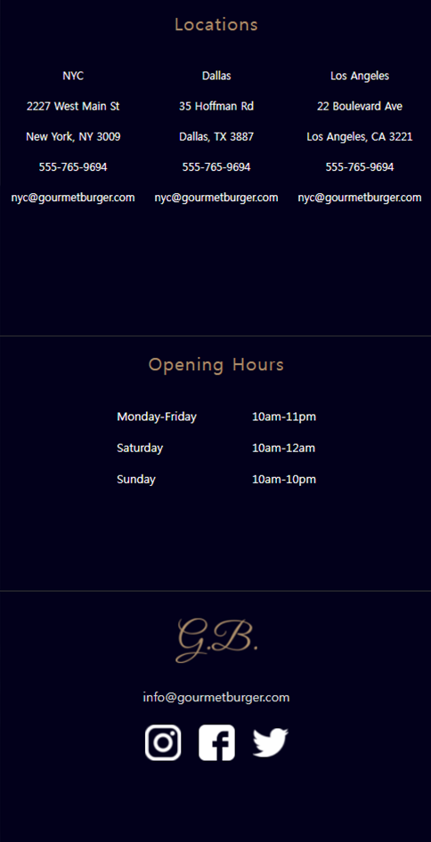

- Architect
- Front-end
- Programming
- I'm Web Developer
- PROJECT 01
Interpark
Open Api, Json, Javascript, Jquery
- POINT COLOR
국내 웹 도서 사이트 '인터파크 도서'입니다.
페이지 내의 도서 내용들은 KaKao에서 제공하는 Open API를 사용했고,
발급받은 Rest Api Key로 데이터를 불러왔습니다.
도서사이트를 차지하는 많은 정보들을 고려 하여
복잡한 레이아웃을 좀 더 간결하며 모던하게 만들었습니다.
Javascript, Jquery 를 사용하여 진열된 도서들의 동적인 기능을 추가했습니다.
더하여 Gallery 항목을 신설해 메인 페이지 하단에 배치 시켜서
유저의 편의성을 위해 Mouse drag slider 로 제작 하였습니다.
도서를 구매가능한 Sub Page, Login Popup 등을 제작했습니다.
- PROJECT 02
Ushno
Responsive Web with Javascript
- POINT COLOR
라디오 브로드캐스트 사이트인 'Ushno' 입니다.
Phone, Pad, Website 세 가지의 반응형 환경을 만들었습니다.
다이나믹한 실황을 전달 해야하는 사이트 특성을 살리기 위해
퍼플 계열의 컬러들을 활용하여 그라데이션 하여 디자인 했습니다.
CSS3 의 flex 속성을 사용하여 Container 가 차지하는
공간들의 규격을 일관성있게 맞추도록 기획 하였습니다. 컨텐츠 사이에
충분한 여백을 부여하여 각 파트끼리 독립되어 보이도록 하였습니다.
서브 페이지의 img와 video 또한 포인트 컬러의 색감을 유지함과 동시에
하단 메거진 레이아웃을 복잡성이 나타나도록 설계 하였습니다.

- PROJECT 03
Gorumet Burger
Responsive Web
- POINT COLOR
햄버거 요리 전문점인 'Gourmet Burger' 의 홍보 사이트 입니다.
미디어 쿼리를 이용해 디바이스 별로 대응하도록 시도해 보았습니다.
기품있고 요리와 어울리는 무드를 전반적으로 스며들게 하기 위하여,
검은색 바탕에 카키색을 포인트로 하여 절제된 색감을 구현 했습니다.
메인 페이지의 이미지들은 고객들의 구매 의사를 높히기 위해 이미지
위주로 틀을 구성 하였습니다.
화면이 599,600,1100으로 resize 될 때 마다 네비게이션이
변화되는 css를 Jquery로 제어 했습니다.
- 
- PROJECT 04
HOME&TONES
HTML5, CSS3, Json, Jquery
- POINT COLOR
페인트 판매 전문 쇼핑몰인 "HOME&TONES" 입니다.
Ajax를 사용하여 Json 포멧의 데이터를 컨텐츠에 호출 함으로서,
하드 코딩이 아닌 서버에서 받아온 데이터를 효율적으로 기입하도록 하였습니다.
파스텔 느낌을 가진 잔잔한 아이보리 계열의 색을 포인트컬러로 지정했습니다.
은은한 회색을 텍스트에 사용하여 이미지가 중심이 되도록 디자인 했습니다.
컨텐츠를 세분화 해주는 타이틀에 검은색을 넣어 가독성을 높혔습니다.

About Me
- STUDY
- 이젠컴퓨터아카데미
- 반응형 UI/UX 웹퍼블리셔전문가 양성
- 2021.04.14 - 2021.09
- HISTORY
- 2020.11.16 - 2021.01.31 LGCNS NLP 상품기획
- 2019.09.01 - 2020.03.02 LotteWorld Marketing Team 2
- 2018.06.26 - 2018.08.17 LotteHotel Renewal 기획
My SKill
HTML5
CSS3
JavaScript
Jquery
Vue
NodeJs
- Profile
- Name : 조경문
- Birth : July 1998
- Age : 24
- Gender : Male
- Address : Suwon
- Major : Electronics
- Contact
010-9976-5695
@_mo__on
newabekar@naver.com
github.com/amooonsen